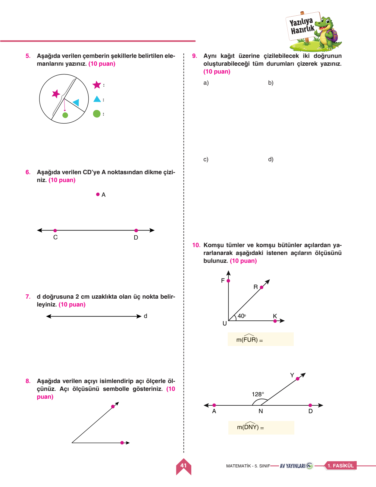
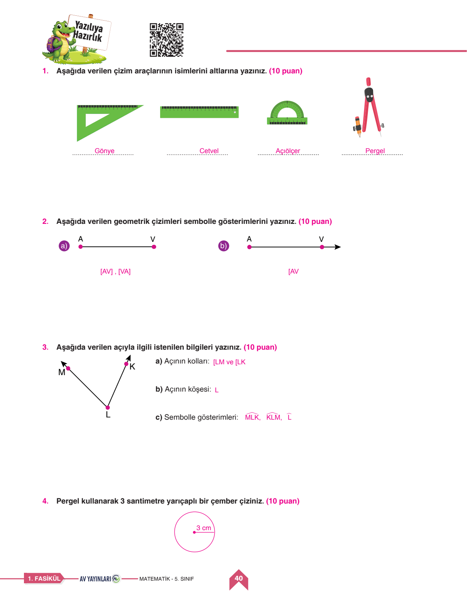
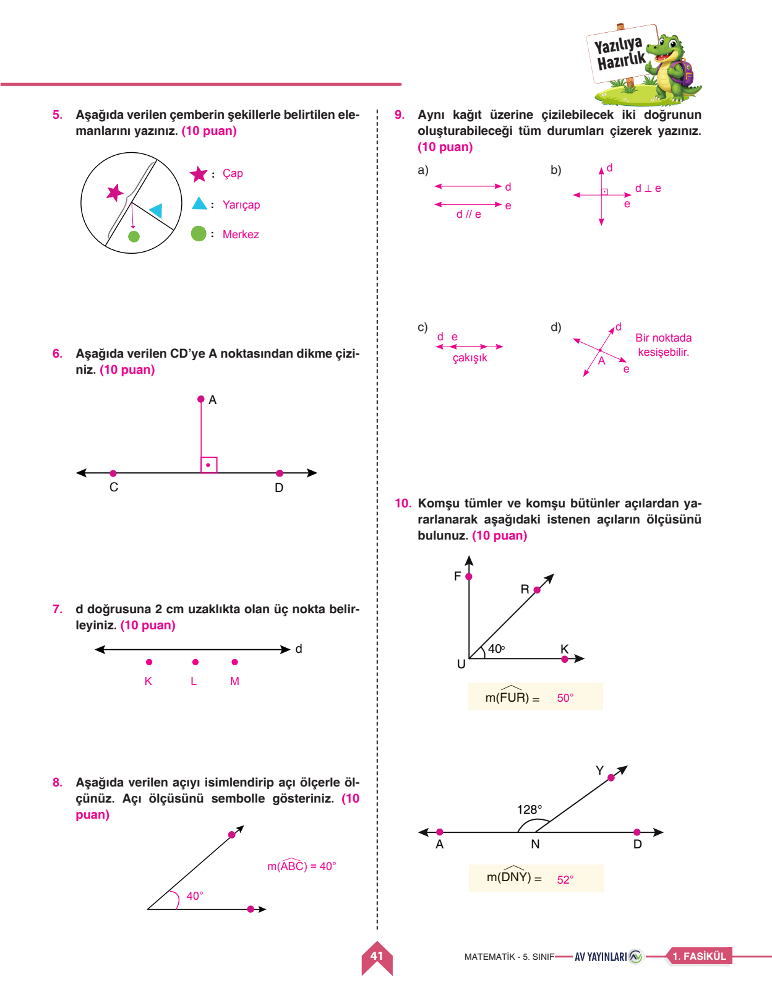

📐 5. Sınıf Matematik 1. Dönem 1. Yazılı
10 Sorunun Tamamı İnteraktif Çözümlü • PDF Üzerinde Doğrudan Çalışma • 100 Puanlık Sınav
0
Mevcut Puan / 100
Soru 1
Çizim Araçlarının İsimleri
10 Puan
📌 Öğretmen Çözümü & Model Cevap:
1. Gönye
2. Cetvel
3. Açıölçer (İletki)
4. Pergel
2. Cetvel
3. Açıölçer (İletki)
4. Pergel
Bu sorudan aldığın puan:
Soru 2
Geometrik Çizimlerin Sembolik Gösterimi
10 Puan
📌 Öğretmen Çözümü & Model Cevap:
a) Doğru Parçası: [AV] veya [VA]
b) Işın (A noktası kapalı, V yönünde sonsuz): [AV veya [AV)
b) Işın (A noktası kapalı, V yönünde sonsuz): [AV veya [AV)
Bu sorudan aldığın puan:
Soru 3
Açının Kolları, Köşesi ve Sembolle Gösterimi
10 Puan
📌 Öğretmen Çözümü & Model Cevap:
a) Açının Kolları: [LM ışını ve [LK ışını
b) Açının Köşesi: L noktası
c) Sembolle Gösterimleri: ML̂K, KL̂M, L̂
b) Açının Köşesi: L noktası
c) Sembolle Gösterimleri: ML̂K, KL̂M, L̂
Bu sorudan aldığın puan:
Soru 4
Pergel ile 3 cm Yarıçaplı Çember Çizimi
10 Puan
📌 Öğretmen Çözümü & Model Cevap:
Çizim Adımları:
1. Cetvel üzerinde pergelin açıklığı tam 3 cm ayarlanır.
2. Sayfada bir 'M' (Merkez) noktası belirlenir.
3. Pergelin iğneli ucu M noktasına sabitlenerek kalem 360° döndürülür.
Elde edilen çemberin yarıçapı r = 3 cm, çapı R = 6 cm olur.
1. Cetvel üzerinde pergelin açıklığı tam 3 cm ayarlanır.
2. Sayfada bir 'M' (Merkez) noktası belirlenir.
3. Pergelin iğneli ucu M noktasına sabitlenerek kalem 360° döndürülür.
Elde edilen çemberin yarıçapı r = 3 cm, çapı R = 6 cm olur.
Bu sorudan aldığın puan:

Soru 5
Çemberin Elemanları
10 Puan
📌 Öğretmen Çözümü & Model Cevap:
a) Çap: Çemberin merkezinden geçen ve iki noktayı birleştiren en uzun doğru parçasıdır (2r).
b) Yarıçap: Merkezden çember üzerindeki herhangi bir noktaya olan uzaklıktır (r).
c) Merkez: Çemberin tam orta sabit noktasıdır (M).
b) Yarıçap: Merkezden çember üzerindeki herhangi bir noktaya olan uzaklıktır (r).
c) Merkez: Çemberin tam orta sabit noktasıdır (M).
Bu sorudan aldığın puan:
Soru 6
CD Doğru Parçasına A Noktasından Dikme Çizimi
10 Puan
📌 Öğretmen Çözümü & Model Cevap:
Dikme Çizimi:
Gönye kullanılarak A noktasından CD doğrusuna 90 derecelik dikme indirilir. Sembolle: [AH] ⊥ CD.
Gönye kullanılarak A noktasından CD doğrusuna 90 derecelik dikme indirilir. Sembolle: [AH] ⊥ CD.
Bu sorudan aldığın puan:
Soru 7
d Doğrusuna 2 cm Uzaklıkta Üç Nokta Belirleme
10 Puan
📌 Öğretmen Çözümü & Model Cevap:
Çözüm:
d doğrusuna dik doğrultuda 2 cm mesafede K, L, M noktaları işaretlenir. Bu üç nokta birleştirildiğinde d doğrusuna paralel yeni bir doğru oluşur.
d doğrusuna dik doğrultuda 2 cm mesafede K, L, M noktaları işaretlenir. Bu üç nokta birleştirildiğinde d doğrusuna paralel yeni bir doğru oluşur.
Bu sorudan aldığın puan:
Soru 8
Açıyı İsimlendirip Açıölçerle Ölçme
10 Puan
📌 Öğretmen Çözümü & Model Cevap:
Ölçüm Sonucu:
• Açının Adı: ABC açısı (B̂)
• Ölçüsü: 40°
• Sembolle Gösterimi: m(AB̂C) = 40° veya s(B̂) = 40°
• Açının Adı: ABC açısı (B̂)
• Ölçüsü: 40°
• Sembolle Gösterimi: m(AB̂C) = 40° veya s(B̂) = 40°
Bu sorudan aldığın puan:
Soru 9
Aynı Kağıttaki İki Doğrunun Oluşturabileceği Durumlar
10 Puan
📌 Öğretmen Çözümü & Model Cevap:
1. Paralel Doğrular: Hiçbir noktada kesişmezler (d // e).
2. Kesişen Doğrular: Tek bir ortak noktada kesişirler.
3. Dik Kesişen Doğrular: Aralarındaki açı 90° olarak kesişirler (d ⊥ e).
4. Çakışık Doğrular: Tüm noktaları ortaktır, üst üste binerler.
2. Kesişen Doğrular: Tek bir ortak noktada kesişirler.
3. Dik Kesişen Doğrular: Aralarındaki açı 90° olarak kesişirler (d ⊥ e).
4. Çakışık Doğrular: Tüm noktaları ortaktır, üst üste binerler.
Bu sorudan aldığın puan:
Soru 10
Komşu Tümler ve Komşu Bütünler Açıları Bulma
10 Puan
📌 Öğretmen Çözümü & Model Cevap:
1. Durum (Tümler Açılar - Toplam 90°):
m(FÛR) = 90° - 40° = 50°
2. Durum (Bütünler Açılar - Toplam 180°):
m(DNY) = 180° - 128° = 52°
m(FÛR) = 90° - 40° = 50°
2. Durum (Bütünler Açılar - Toplam 180°):
m(DNY) = 180° - 128° = 52°
Bu sorudan aldığın puan:


📐 1. Geometrik Çizim Araçları
- Cetvel: Doğru parçası çizimi ve uzunluk ölçümü.
- Gönye: 90 derecelik diklik ve dikme çizimleri.
- İletki (Açıölçer): Açının derece cinsinden ölçümü (0° - 180°).
- Pergel: Belirli yarıçapta çember ve yay çizimi.
📏 2. Tümler ve Bütünler Açılar
- Tümler Açılar: Ölçüleri toplamı 90°'dir. Örn: 40°'nin tümleri 50°'dir.
- Bütünler Açılar: Ölçüleri toplamı 180°'dir. Örn: 128°'nin bütünleri 52°'dir.